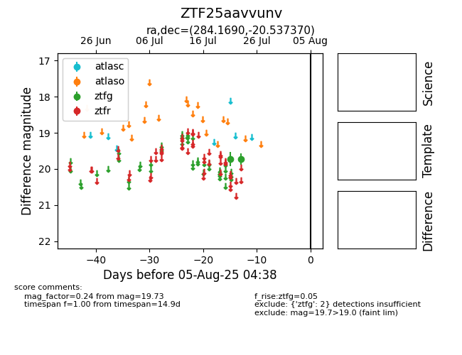

Target ZTF25aavvunv at 2025-08-05 23:02, see:
FINK: fink-portal.org/ZTF25aavvunv
Lasair: lasair-ztf.lsst.ac.uk/objects/ZTF25aavvunv
ALeRCE: alerce.online/object/ZTF25aavvunv
alt names
ZTF25aavvunv (ztf,fink)
coordinates:
equatorial (ra, dec) = (284.1690,-20.53737)
galactic (l, b) = (15.0274,-10.31237)
photometry
last ztfg=19.73
2 ztfg detections
